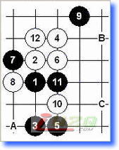
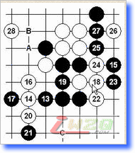
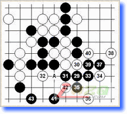
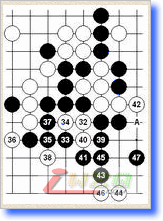

吴镝的斗志感染着我们
#1 吴镝的斗志感染着我们 作者：有志青年 发表时间：2007-8-16 7:44:31
今天这盘万众瞩目！励精教室的直播室挤得水泄不通，我费了半天劲才进去打了一句话就被挤出来。本局吴镝在和棋就夺冠的情况下，下的毫不手软执黑下的很积极。吴镝的斗志感染着我们这些万里之遥的观战者。
黑方 ：吴镝 白方 ：Sushkov Vladimir 黑胜

实战进程一：瑞星开局，Sushkov的12应该是经过深思熟虑的，考虑到吴镝和棋即夺冠，肩负阻击任务的他不能轻易让局面导向和棋。如12选择A点，13－B点的变化估计昨天看完吴镝胜卡尔松那局后，应该考虑避开吴镝的研究范围。12－C的话，13－A大型官和定式，那样的结果是Sushkov不能接受的。其他的12较弱，即便黑棋不能胜，但利用优势导入和棋还是容易的。似乎本局的12只能如此了。

实战进程二：黑13、15的应手在上一届世锦赛上比较多见，此后经过棋手们的深入研究，普遍感觉还是黑棋有优势。18以往比较多的下法是18－A，19－B，18－18，实战白棋保留了变化。21强手！挡上也可，如此下方黑势对白棋有压迫感。22防的很坚实，23～27的处理应该是想将局面导入和棋吧。27防守后，28在下面防一手是应该的，比如28－C位可以考虑。但如果这样Sushkov大概考虑战线越漫长，对白棋争胜越没信心吧。实战的28胜负手！棋局进行到此，凭感觉似乎觉得黑棋下方难有作为，上面白棋已经具有优势，似乎吴镝危险？我们的心被悬了起来。

实战进程三：实战29、31后大家才发现此处黑棋已经必胜！！吴镝应该已经算准白棋不能脱先他投。以下黑棋算路精准，43后Sushkov投子认负。吴镝完胜的一局。
中国首位世界冠军诞生！中国五子棋从此翻开崭新的一页！祝贺吴镝！

参考图：如32改变防点，黑棋简单胜。32－33，33－A后简单追胜。